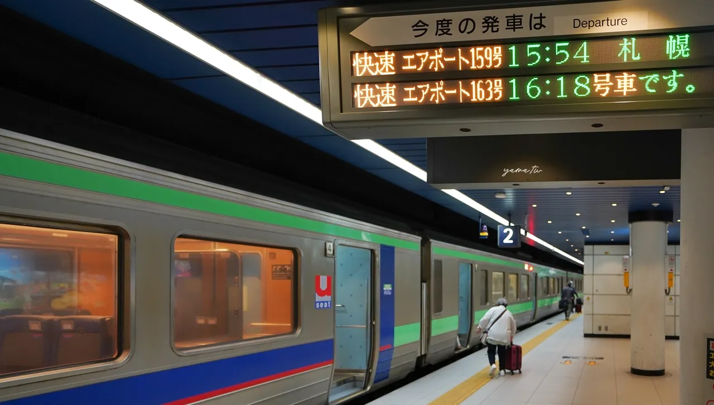
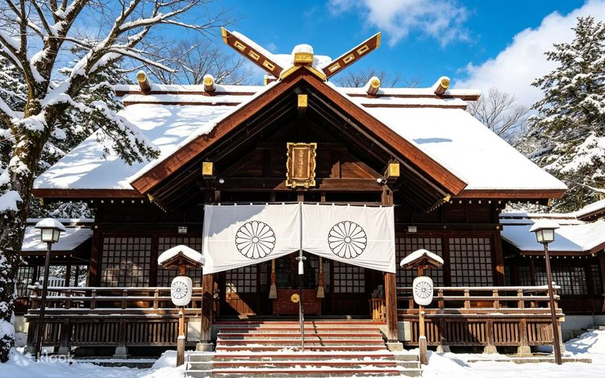
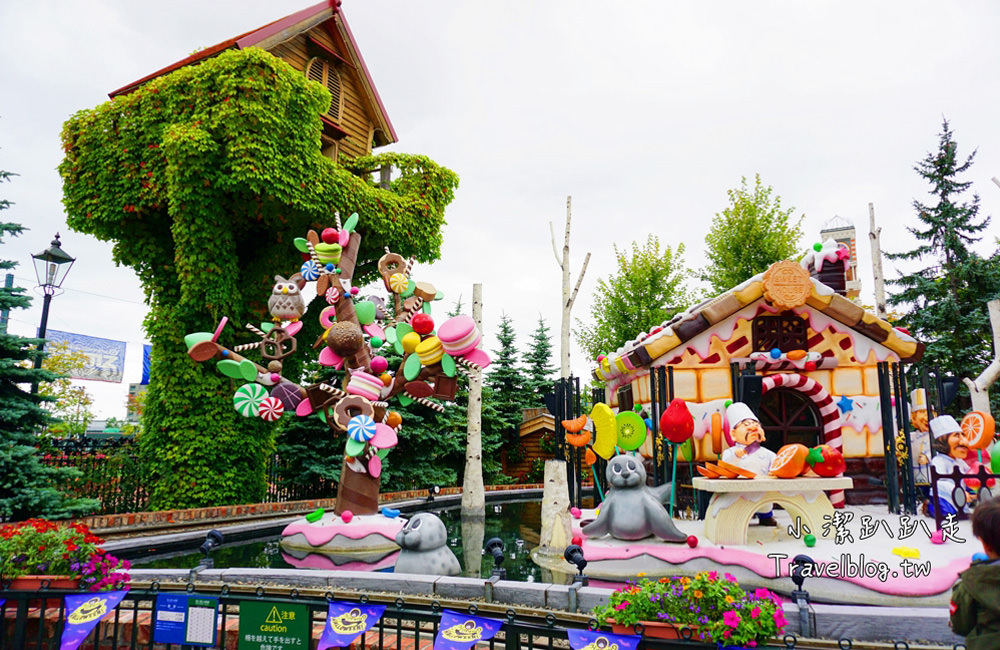
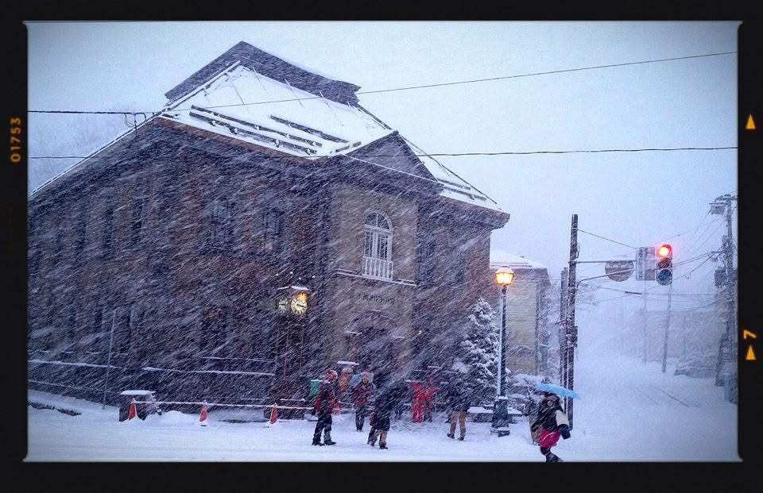

桃園 ✈️ 新千歲機場 ➔ 札幌
12/9抵達日✈｜捕捉可愛的哆啦A夢與初雪氣息❄️




DAY 1
抵達新千歲⛇
12:15
✈️ 酷航起飛
桃園機場出發，直飛新千歲。
桃園機場出發，直飛新千歲。
17:00
降落新千歲機場⛄
抵達航廈，會有可愛的哆啦A夢玩偶歡迎您！
抵達航廈，會有可愛的哆啦A夢玩偶歡迎您！
18:30
🏨 Holiday Inn Express 札幌薄野飯店 Check-in
🚆 搭乘 JR 快速エアポート：從新千歲機場地下一樓的新千歲機場 JR 車站出發，搭乘開往札幌方向的 JR 快速列車。車程大約 37 分鐘即可抵達「札幌站」。
🔄 轉乘札幌市營地下鐵：
抵達札幌站後，跟隨指標前往地下鐵南北線的「札幌站」。
🚇 搭乘南北線（往真駒內方向），坐 2 站即可到達「薄野站」。再步行至飯店：
🚶 從薄野站出站後，步行約 3 至 5 分鐘即可抵達飯店。
🚆 搭乘 JR 快速エアポート：從新千歲機場地下一樓的新千歲機場 JR 車站出發，搭乘開往札幌方向的 JR 快速列車。車程大約 37 分鐘即可抵達「札幌站」。
🔄 轉乘札幌市營地下鐵：
抵達札幌站後，跟隨指標前往地下鐵南北線的「札幌站」。
🚇 搭乘南北線（往真駒內方向），坐 2 站即可到達「薄野站」。再步行至飯店：
🚶 從薄野站出站後，步行約 3 至 5 分鐘即可抵達飯店。
19:30
🍜 晚餐時光
外出覓食札幌道地美食。
外出覓食札幌道地美食。
22:00
🍶 居酒屋開張
休息或喝喝小酒。
休息或喝喝小酒。
札幌市區散策 ➔ 北海道神宮 ➔ 晚餐吃蟹
12/10第二天｜感受雪景神宮與鮮美螃蟹饗宴🦀




DAY 2
北海道神宮・吃蟹
09:30
🥞 悠閒早晨與早餐
享用美味早餐，準備展開一日行程。
享用美味早餐，準備展開一日行程。
10:30
⛩️ 北海道神宮參拜
搭乘地下鐵至中島公園或圓山公園，感受莊嚴的雪中神社氛圍。
搭乘地下鐵至中島公園或圓山公園，感受莊嚴的雪中神社氛圍。
13:00
🦀 午餐：札幌市區享用美味螃蟹料理
品嚐新鮮肥美的帝王蟹與毛蟹。
品嚐新鮮肥美的帝王蟹與毛蟹。
16:00
🛍️ 狸小路商店街血拼
藥妝、伴手禮一次買齊。
藥妝、伴手禮一次買齊。
定山溪溫泉散策 ➔ 雪見溫泉療癒
12/11第三天｜享受溫暖的雪中露天風呂♨️


DAY 3
溫泉療癒日
10:00
🚌 搭乘溫泉專車出發
前往定山溪溫泉區，沿途欣賞雪白山景。
前往定山溪溫泉區，沿途欣賞雪白山景。
12:30
♨️ 溫泉飯店 Check-in & 泡湯
換上浴衣，享受極致的雪見露天溫泉。
換上浴衣，享受極致的雪見露天溫泉。
18:00
🍱 會席料理晚餐
品嚐精緻的日式傳統會席料理。
品嚐精緻的日式傳統會席料理。
札幌 ➔ 小樽浪漫運河一日遊
12/12第四天｜漫步玻璃工房與浪漫小樽運河✨




DAY 4
小樽浪漫行
09:00
🚆 搭乘 JR 前往小樽
沿著海景鐵路，車程約 40 分鐘。
沿著海景鐵路，車程約 40 分鐘。
10:30
🚶 小樽運河與倉庫群散策
欣賞浪漫的復古歐風建築與雪景交織。
欣賞浪漫的復古歐風建築與雪景交織。
13:00
🍣 政壽司午餐
品嚐新鮮道地的小樽握壽司。
品嚐新鮮道地的小樽握壽司。
15:30
🕯️ 堺町通商店街與音樂盒堂
逛玻璃工藝品、買伴手禮。
逛玻璃工藝品、買伴手禮。
札幌最後採購 ➔ 新千歲機場 ➔ 賦歸
12/13第五天｜帶著滿滿回憶與戰利品快樂返航✈️


DAY 5
快樂返航
09:30
🛒 最後採買與退房
買齊北海道限定甜點與伴手禮。
買齊北海道限定甜點與伴手禮。
12:00
✈️ 前往新千歲機場
逛機場內的哆啦A夢愉快的天空樂園、拉麵道場。
逛機場內的哆啦A夢愉快的天空樂園、拉麵道場。
16:00
🛫 搭機返回台灣
結束美好的北海道冬日之旅！
結束美好的北海道冬日之旅！